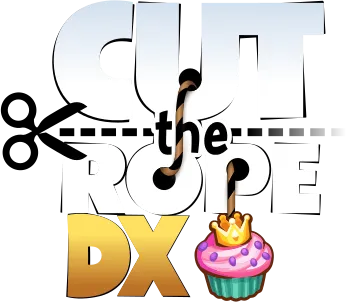
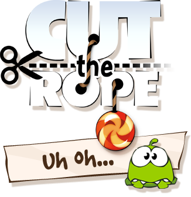

Loading…
Taking too long? You might want to check your internet speed, or reload the page.
This browser is too old to run the game. iOS and iPadOS need version 15 or newer.
The game could not start. Check your connection and reload the page.
The browser reset the game's graphics. Reload to continue - previously saved progress should still be there, but the current level will restart.